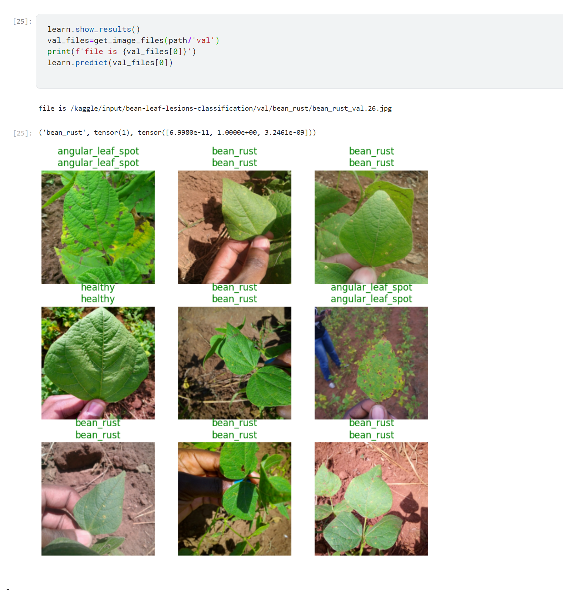
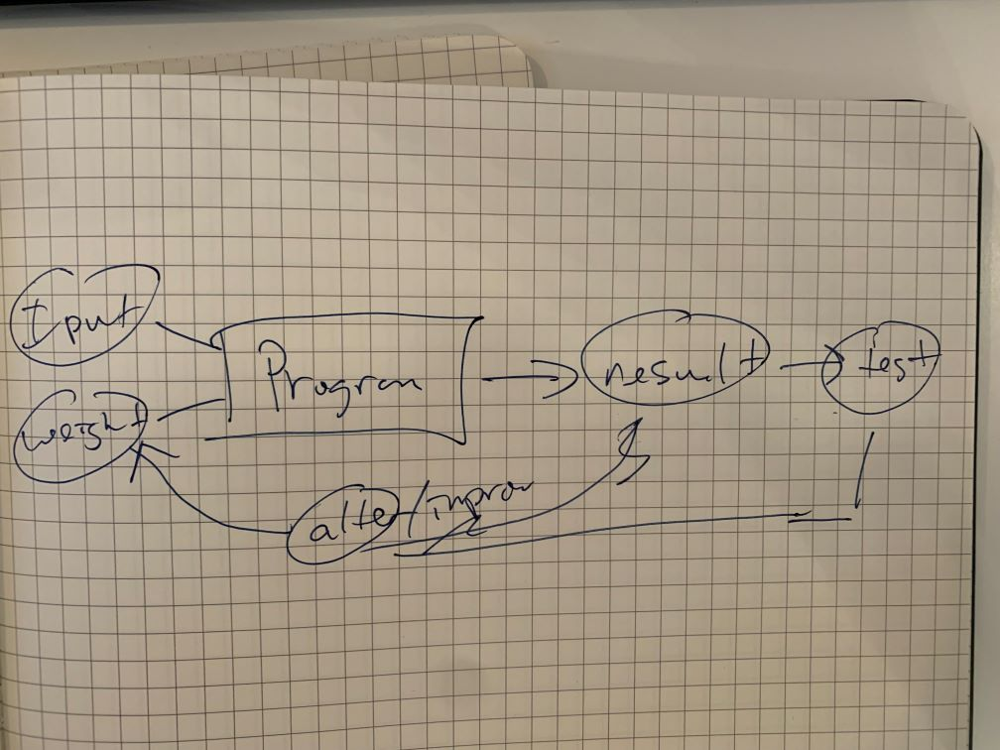

FastAI Week 1
Recap
This week was basically an intro and some quick examples of using the fastai library in a variety of contexts. Most of the initial demonstration comes in the form of computer vision.
I ran through the clean notebook on Kaggle. I also made my own image classifier that evaluates pictures of bean leaves and labels them with various disease type (or if they’re healthy). 
Quiz
I thought it would be valuable to go through the quiz and document my answers and reasoning (if that applies).
Do you need these for deep learning?
- Lots of math T / F
- Lots of data T / F
- Lots of expensive computers T / F
- A PhD T / F
These are all false, although common, misconceptions. I’d say I had these too for a long time. This course convinced me otherwise.
- Name five areas where deep learning is now the best in the world.
- radiology
- go playing
- What was the name of the first device that was based on the principle of the artificial neuron? perception
- Based on the book of the same name, what are the requirements for parallel distributed processing (PDP)?
- a set of processing units (what is this?)
- a state of activation
- an output function for each unit
- a pattern of connectvity (I’m taking all the above to basically be analagous to a perceptron)
- propogation (how do we “push” activities into the model to train it)
- activation rule (how multiple produce an output)
- learning rule (how do we modify a network of perceptrons by “experience”)
- environment
- What were the two theoretical misunderstandings that held back the field of neural networks?
- people missed minsky’s second insight that although a single layer could not approximate functions, multiple layers could
- however multilayered networks were often too slow to be useful (until GPUs)
- What is a GPU?
- A matrix multiplying chip (originballyt designed for graphics)
Open a notebook and execute a cell containing:
1+1. What happens?2!Follow through each cell of the stripped version of the notebook for this chapter. Before executing each cell, guess what will happen. https://www.kaggle.com/code/zanadar/fastai-ch1-clean
Complete the Jupyter Notebook online appendix. Don’t know what this is….
Why is it hard to use a traditional computer program to recognize images in a photo? How would you describe the steps of this process? “computers are giant morons, not giant brains”
What did Samuel mean by “weight assignment”? weight assignments are the value of variables (weights) that are part of the input to our ML program. they affect its operation.
What term do we normally use in deep learning for what Samuel called “weights”? parameters
Draw a picture that summarizes Samuel’s view of a machine learning model. 
Why is it hard to understand why a deep learning model makes a particular prediction? Sheer volume of model interconnections, parameters. This is called interprability
What is the name of the theorem that shows that a neural network can solve any mathematical problem to any level of accuracy? The universal approximation theorem
What do you need in order to train a model? Labeled data
How could a feedback loop impact the rollout of a predictive policing model? Arrests/area -> activity is concentrated in that area -> more arrests there. This is the problem of “overfitting” and happens when a model doesn’t generalize/
Do we always have to use 224×224-pixel images with the cat recognition model? No but thats a convention
What is the difference between classification and regression? classification: categories. regression: numerical value
What is a validation set? What is a test set? Why do we need them? validation is used to check the model after training and as part of the process of creating the model to make sure our model generalized. Test set is a further ‘secret’ set of data that is used to check the model at the end.
What will fastai do if you don’t provide a validation set? Create one on its own
Can we always use a random sample for a validation set? Why or why not? No. For example in time series we can’t just randomly select points as they won’t make sense for the input. we would set aside a validation set thats a portion of the timeline.
What is overfitting? Provide an example. When a model is trained for a long time on data, it can learn to recognize the exact data in the training set and not generalize. For example it would recognize all the individual cats, but not generalze to a new cat.
What is a metric? How does it differ from “loss”? an indication of performance of the model against the validation data. loss can be the same, but it might differ in order to be useful as a function to update the parameters/weights
How can pretrained models help? Taking a model where there are existing layers that can do something and specializign the last layer(s) to our specific task. For example earlier layers may be able to recognize shapes, edges, textures, etc. and then we use transfer learning to tune that model to recognize cats and dogs.
What is the “head” of a model? the top layer
What kinds of features do the early layers of a CNN find? How about the later layers? In a vision model, more basic shapes like edges and gradients. Later is more specific elaborations of those earlier layers, like “multiple layers” or patterns
Are image models only useful for photos? No. Different kinds of data can be turned into images and then used to train a model.
What is an “architecture”? An organziation of layers within a model, albeit as a template for a function. A model is an architecture + a set of parameters,
What is segmentation? Labelling pixels in an imge.
What is
y_rangeused for? When do we need it? in a collabarative model, with a regression prediction,y_rangetells us the range of possible predictionsWhat are “hyperparameters”? Choices about parameters themselves (such as learning rates and data augmentation strategies), that lend meaning to the weights
What’s the best way to avoid failures when using AI in an organization? Have a good test dataset to check a model against.